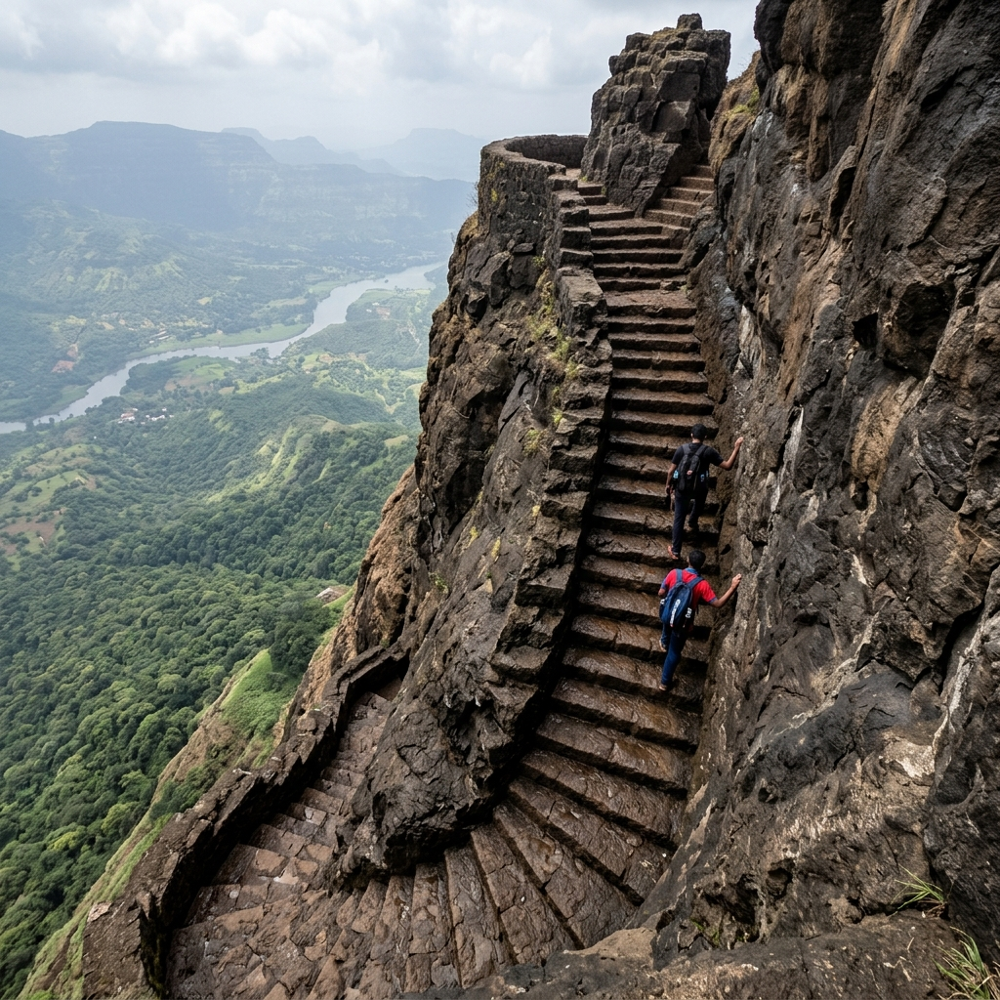
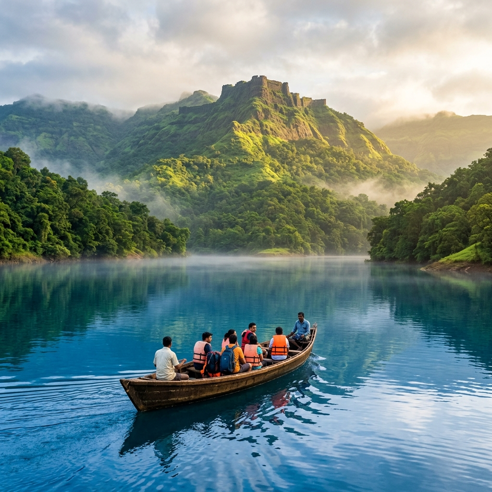

About Fort
Harihar Fort is one of the most thrilling and unique forts in Maharashtra, famous for its near-vertical 80° rock-cut steps. Located near Nashik, it offers an adrenaline-filled trekking experience and stunning views of surrounding peaks such as Brahmagiri and Anjaneri.
It is a favorite destination for adventure seekers and experienced trekkers. Built on a triangular prism of rock, the fort was constructed during the Yadava dynasty period to guard the Gonda Ghat trade route.
Unique Design
80° Rock Steps
Adrenaline
High Thrill
Major Attractions
Explore the highlights of Harihar Fort's vertical stone path.




Travel Guide
Comprehensive routes to reach the base village from Mumbai.
Option 1: Rail & Local Bus via Nirgudpada
Take a train from Mumbai to Nashik Road station. From Nashik, take a local state transport (ST) bus or a shared taxi heading towards Trimbakeshwar and Nirgudpada village, the starting point of the trek.
Cost: ₹250 – ₹450 ApproxOption 2: Alternative Route via Harshewadi
Alternatively, hire local private vehicles from Nashik directly to Harshewadi village. The climb from Harshewadi has slightly gentler paths before joining the steep stairs.
Cost: ₹300 – ₹600 ApproxOption 3: Direct Drive
A scenic ~165 km drive from Mumbai along the Mumbai-Nasik Highway (NH 3), exiting at Ghoti or Nashik towards Trimbakeshwar and Nirgudpada village. Parking space is available at the base village.
Essential Information
Everything you need to know for a smooth adventure.
Stay & Food
Overnight stays are not allowed on the fort top. Abundant guest lodges, hotels, and resorts are available in Nashik or nearby Trimbakeshwar town. Local food stalls operate at the base village.
Essentials
Carry 3L water, high-grip trekking shoes, climbing gloves (useful for cold stone steps), a raincoat (monsoon), a flashlight/torch, and a personal first aid kit.
Best Time
October to February is ideal. Monsoon (June-Sept) is also extremely popular but requires extreme caution as the steep 80° rock steps can get very slippery under wet conditions.
Location & Coordinates
Harihar Fort, Near Nashik, Maharashtra, India